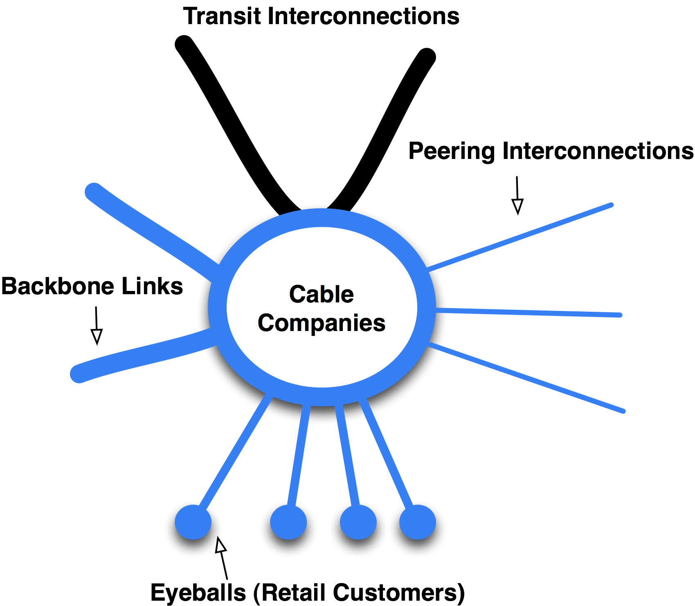
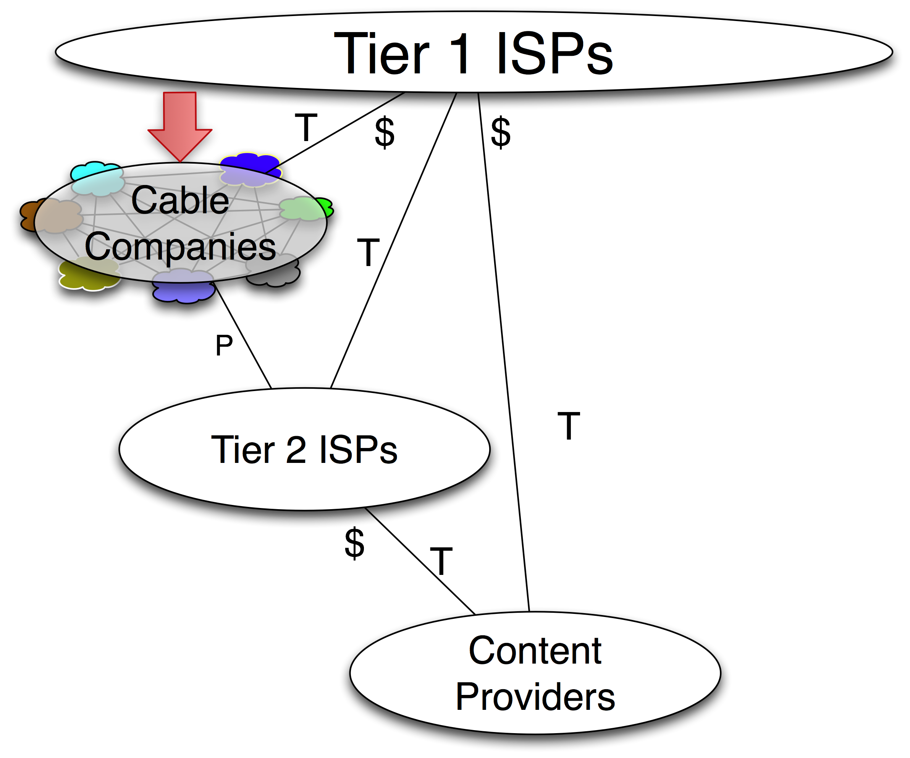

Evolution #1 – The Cable Companies Peer with Each Other
Up until 2001, a company called @Home provided essentially all Internet access services to the cable companies. But in 2001, @Home unexpectedly went bankrupt. Suddenly, the cable companies were forced to in-source broadband Internet services. The cable companies were given only 30 days’ notice to establish high-capacity transit relationships and launch their own Internet services. They entered the ecosystem as independent broadband access network providers as shown graphically in Figure 10-1.
The cable company player model is similar to that for Tier 2 ISPs but is a little different in that the cable companies are regional and don’t tend to compete in overlapping areas, and they tend to pull enormous volumes of traffic.
When the cable companies attached to their new upstream ISPs, each cable company experienced the same thing: Internet Transit circuits were congested almost immediately. Each of the cable companies ordered upgrades to these circuits, and almost immediately the Internet Transit connections were again congested!
What was going on here?
After some analysis, the cable companies found that about 40% of all cable company traffic was peer-to-peer (file sharing) traffic. Importantly, this was traffic that was ultimately destined for other cable company networks. Peer-to-peer traffic is different than other kinds of traffic, in that it will expand to consume all available bandwidth. At that time, I had been working with the cable companies on the benefits of peering, and as a result, many of them built into multiple regional IXPs and started peering openly with each other and with the other Tier 2 ISPs in the ecosystem.
These new players and their peering relationships are shown graphically in Figure 10-2.

Figure 10-1. The Cable Company model.
One might ask, why is there a separate species of player; isn’t the cable company model identical to the Tier 2 ISP model? Why is this evolution significant?
This evolution represented a significant change in the U.S. Internet Peering Ecosystem because:
- The volume of traffic being exchanged directly in a peering relationship, among the cable companies and between the cable companies and the Tier 2 ISPs was huge – second only to the Tier 1 ISPs’ traffic exchange volume estimates at the time. Therefore, the amount of traffic that bypassed the Tier 1 ISPs, and therefore the amount of money that peering saved the cable companies, could be measured in millions of dollars.
- In 2003, the cable companies had an Open Peering Policy. The cable companies were not generally interested in selling transit to ISPs or Content Providers, and they generally worked in non-overlapping regions, so they didn’t compete against each other. As a result, there was no reason not to peer openly.
- Peer-to-peer traffic consumed all available bandwidth. The typical ISP sinusoidal demand curve was replaced with a flatter demand curve as peer-to-peer file-sharing software now preferred the higher-bandwidth, lower-latency paths to peered cable company customers.
It was also noted that the peer-to-peer traffic volume grew immediately after the cable companies peered with each other. Peering caused the file-sharing service Kazaa to prefer to fetch files across the now peered network path. The Kazaa selection protocol at the time used latency to determine which Kazaa file sharer was “more local,” and automatically selected that file sharer. The result was that when cable companies peered with each other, there was an immediate 20% growth in Kazaa-originated peering traffic volume.

Figure 10-2. The cable companies emerge as independent players.
Notes from the field.
The Grandma Story.
A grandmother in Australia invited her grandkids over for the holidays. In Australia, end users are charged for Internet access on a per-megabytes-downloaded basis. Grandma just received a computer and the grandkids helped her set it up. The grandkids were excited to demonstrate their expertise, and wanted to hear the latest Britney Spears album on grandma’s new computer. So, they installed some peer-to-peer software and started the download.
The download did not complete during the visit, they never got to hear the album, and the kids forgot about it. However, the download did eventually complete, and the grandmother was not tech-savvy enough to know to shut down the connection. By default peer-to-peer software shares all files it downloads, and soon grandma’s computer became the preferred source for the Britney Spears album for the entire continent! Grandma’s bill from Telstra was thousands as opposed to the usual $25 she paid per month. The issue was compounded since the pricing point in Australia was twice as high if you were a net source of content as opposed to a net sink of traffic.
So grandma called Telstra and said its billing machine was broken. Telstra reversed the charges and told her to turn off her computer until someone could uninstall the peer-to-peer software. So grandma thanked them, hung up the phone, and turned off the monitor to the computer. Why not – that works with the TV set. The next month the bill was double; again she disputed it, but Telstra didn’t reverse the charges and the story became public, enabling me to write about it. In contrast, in the U.S. broadband is typically a flat fee, and there is no such financial disincentive to use all the bandwidth available.